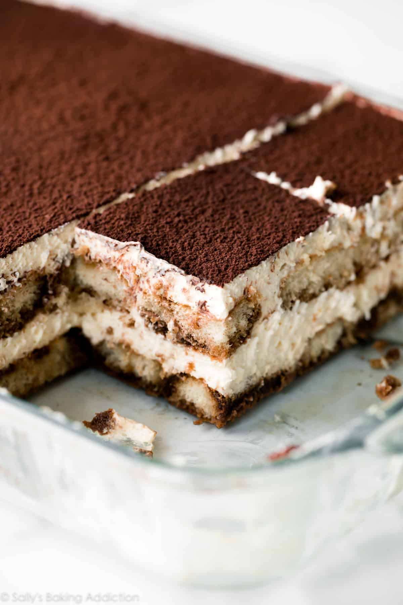

Tiramisu

Description
This recipe is from the late Maida Heatter. Looking at the reviews it has recieved, there is no doubt as to the deliciousness of this dessert!
Ingredients
- 1 and 1/4 cups (300ml) very strongly prepared espresso, warm or room temperature
- 6 Tablespoons (90ml) Grand Marnier Cognac/Liquer
- 40–45 ladyfingers
- 16 ounces (about 2 cups; 450g) mascarpone, cold or at room temperature
- 1/4 cup (60ml) dark rum
- 4 large pasteurized eggs, separated
- 1/2 cup (100g) granulated sugar, divided
- 2 cups (480ml) heavy cream or heavy whipping cream
- 1/2 teaspoon pure vanilla extract
- 1/8 teaspoon salt
- unsweetened natural or dutch-process cocoa powder
Steps
- You need a large 9×13 inch baking pan/dish with at least a 12-14 cup capacity. Set aside and have ready to go!
- Dip half of the ladyfingers: You will form 2 layers each of dipped ladyfingers and mascarpone cream. Let’s begin with the 1st layer of ladyfingers. Whisk the espresso and Grand Marnier together in a shallow bowl. One at a time, quickly dip each side of the ladyfinger into the espresso mixture. You don’t want to over-saturate the ladyfinger with liquid because then the ladyfingers will taste soggy. Just a quick dip on each side. Arrange the dipped ladyfingers in the baking pan to make one solid layer. If needed, cut some ladyfingers to fill in any empty spaces. Reserve remaining espresso mixture and ladyfingers for another layer.
- Begin the mascarpone cream: With a handheld or stand mixer fitted with a paddle or whisk attachment, beat the mascarpone and rum together on medium speed in a large bowl until smooth. Set aside.
- Prepare a double boiler for the egg yolks: If you have a double boiler, use it in this step. If you don’t, place a heat-proof bowl over a small pot of simmering water over medium-low heat. Don’t let the water touch the bottom of the bowl. Using a whisk or eggbeater (I simply use a whisk), whisk the egg yolks and 1/4 cup (50g) of granulated sugar together until light and foamy, about 5 minutes. Remove from the heat and immediately pour into the mascarpone mixture. Beat on medium speed until combined.
- Whip the heavy cream: With a handheld or stand mixer fitted with a whisk attachment, beat the heavy cream and vanilla extract together on medium-high speed until medium peaks form, about 3-4 minutes. Medium peaks are between soft/loose peaks and stiff peaks– and are the perfect consistency for the tiramisu cream. Fold the whipped cream into the mascarpone mixture.
- Beat the egg whites: With a handheld or stand mixer fitted with a *clean* whisk attachment, beat the egg whites and salt together on medium-high speed until foamy, about 1 minute. Increase to high speed and slowly pour in the remaining 1/4 cup (50g) of sugar. Beat until stiff peaks form, about 4-5 minutes. (Do not over-beat as the egg whites will become dry.) Fold into the mascarpone cream.
- Spread half of the mascarpone cream evenly over bottom layer of ladyfingers. An offset spatula helps spread it neatly and evenly.
- Dip remaining ladyfingers: Dip remaining ladyfingers into remaining espresso mixture and arrange one-by-one on top of the mascarpone layer. Gently press each down so they are nice and compact. Using an offset spatula, spread remaining mascarpone mixture evenly on top. If you’re using a large enough pan, it should all fit (but it will definitely tower high!). Refrigerate uncovered for 2-3 hours.
- Add cocoa layer, then chill: After a couple hours in the refrigerator, sift or strain a dense layer of cocoa powder all over the top. Wipe the rim of the baking dish. Cover with plastic wrap or aluminum foil, then refrigerate for at least 8-9 more hours and up to 1 day.
- Using a sharp knife, slice chilled tiramisu into servings. Wipe knife clean between cuts. A small metal serving spatula is helpful for removing the slices.
- Cover leftover tiramisu and store in the refrigerator for up to 3 days.
Home Page